4.3 旅游规划小精灵¶
大家可以通过链接：https://www.coze.cn/store/agent/7494901461932097575?bid=6g0ptbpl06g13 访问：
旅游规划小精灵智能体主要功能是根据用户输入，通过大语言模型和插件进行问题解析、生成个性化旅游规划方案，
整体的工作流如下所示：
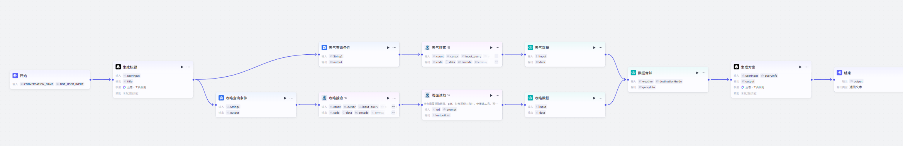
具体如下：
- 生成旅游方案标题
- 天气查询条件生成与搜索
- 攻略查询条件生成与搜索
- 数据合并
- 生成旅游规划方案
通过以上步骤，工作流从用户输入开始，经过多个节点的处理和信息整合，最终生成个性化的旅游规划方案。
一、工作流设计¶
1 生成旅游方案标题¶
直接输入问题使用，使用大模型进行回答。
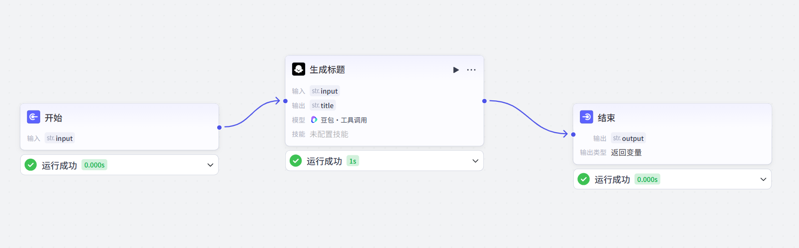
- 开始节点：工作流的起始节点，用于设定启动工作流需要的输入信息。
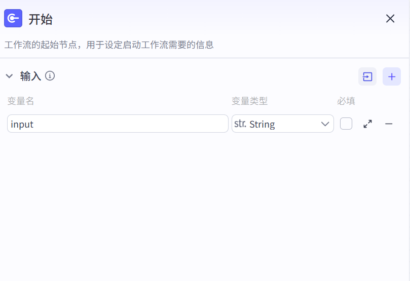
- 大模型节点：调用大语言模型，根据输入的用户旅游需求信息，按照特定的标题生成模板和设定的规则，生成一个合理且好听的旅游方案标题生成问题答案
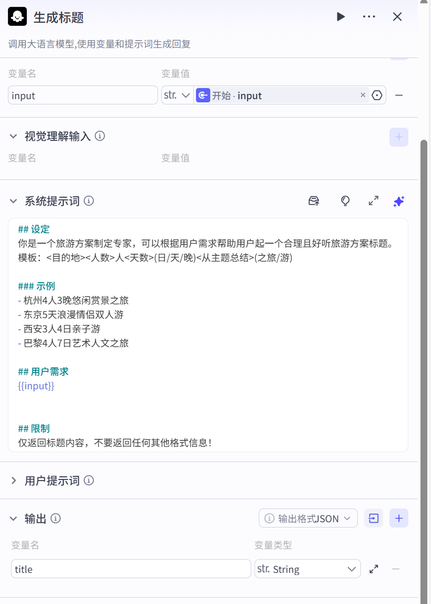
系统提示词：
## 设定
你是一个旅游方案制定专家，可以根据用户需求帮助用户起一个合理且好听旅游方案标题。
模板：<目的地><人数>人<天数>(日/天/晚)<从主题总结>(之旅/游)
### 示例
- 杭州4人3晚悠闲赏景之旅
- 东京5天浪漫情侣双人游
- 西安3人4日亲子游
- 巴黎4人7日艺术人文之旅
## 用户需求
{{input}}
## 限制
仅返回标题内容，不要返回任何其他格式信息！
- 结束节点：是工作流的最终节点，用于返回工作流运行后的结果。结束节点支持两种返回方式，即返回变量和返回文本。
2 天气查询条件生成与搜索¶
该部分主要包含 “天气查询条件”、“天气搜索”、“天气数据处理” 三个节点，主要功能是获取天气相关信息。先构建查询条件，再调用搜索 API 获取数据，最后处理数据得到所需天气内容。
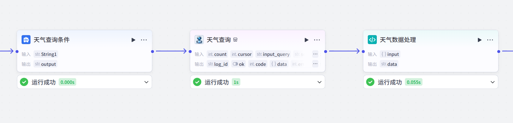
- 天气查询条件：属于文本处理类型，获取 “title” 输出值作为 “String1”，按 “{{String1}} 天气查询” 格式拼接，输出用于后续搜索的天气查询条件。
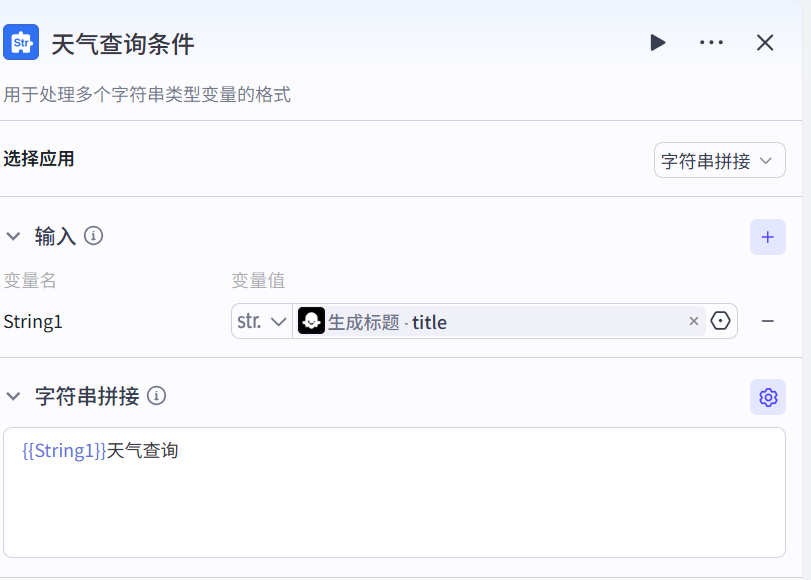
- 天气搜索：通过调用头条搜索 API 进行天气内容搜索。接收 “天气查询条件” 节点的输出作为 “input_query”，设置搜索结果数量 “count” 为 1，调用 API 后返回包含状态码、搜索数据、错误码等的搜索结果。
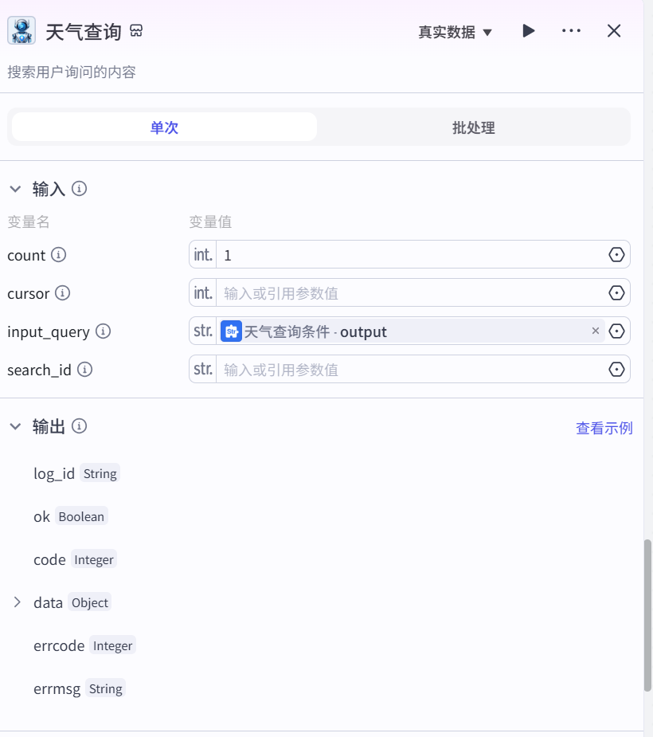
- 天气数据处理：负责处理搜索数据。获取 “天气搜索” 节点的 “data” 输出，用编写的代码从 “doc_results” 数组首元素提取 “summary” 字段值，将其作为处理后的天气数据输出。
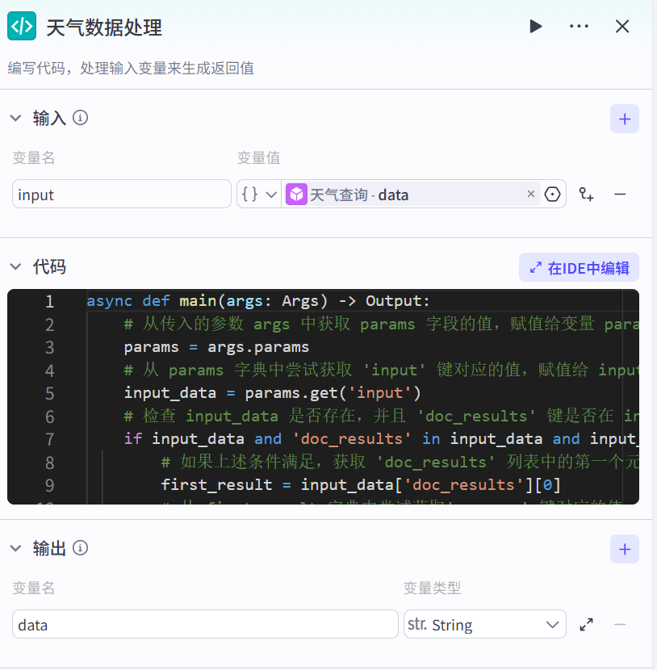
代码如下：
# 定义一个异步函数 main，函数的参数类型为 Args，返回值类型为 Output
async def main(args: Args) -> Output:
# 从传入的参数 args 中获取 params 字段的值，赋值给变量 params
params = args.params
# 从 params 字典中尝试获取 'input' 键对应的值，赋值给 input_data
input_data = params.get('input')
# 检查 input_data 是否存在，并且 'doc_results' 键是否在 input_data 字典中，以及 'doc_results' 对应的值是否为非空列表
if input_data and 'doc_results' in input_data and input_data['doc_results']:
# 如果上述条件满足，获取 'doc_results' 列表中的第一个元素，赋值给 first_result
first_result = input_data['doc_results'][0]
# 从 first_result 字典中尝试获取'summary' 键对应的值，赋值给 summary
summary = first_result.get('summary')
# 检查 summary 是否存在（不为 None）
if summary:
# 如果 summary 存在，返回一个字典，其中 'data' 键对应的值为 summary
return {'data': summary}
# 如果前面的条件不满足，返回一个字典，其中 'data' 键对应的值为字符串 'null'
return {'data': 'null'}
3 攻略查询条件生成与搜索¶
该部分包含四个主要节点，它们依次协作完成旅游攻略信息的搜索、网页内容读取以及数据处理，实现从用户输入到获取并整理特定攻略信息的功能。
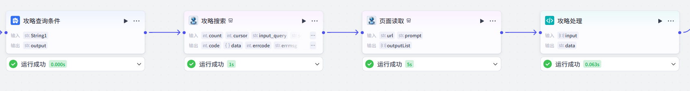
- 攻略查询条件：对字符串变量进行格式处理，将从生成旅游方案标题获取的
title值，按照site: www.mafengwo.cn {{String1}}格式拼接，生成用于攻略搜索的查询条件，限定搜索范围在马蜂窝网站，增强搜索结果相关性。
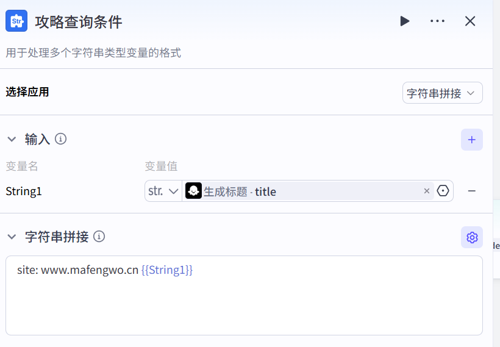
- 攻略搜索：调用头条搜索
searchAPI，依据上一节点生成的查询条件进行搜索，设置获取 5 条搜索结果。返回包括状态码、搜索数据（含网站名称、摘要、标题、链接等）、错误信息等内容，为后续获取网页内容提供链接及相关信息。
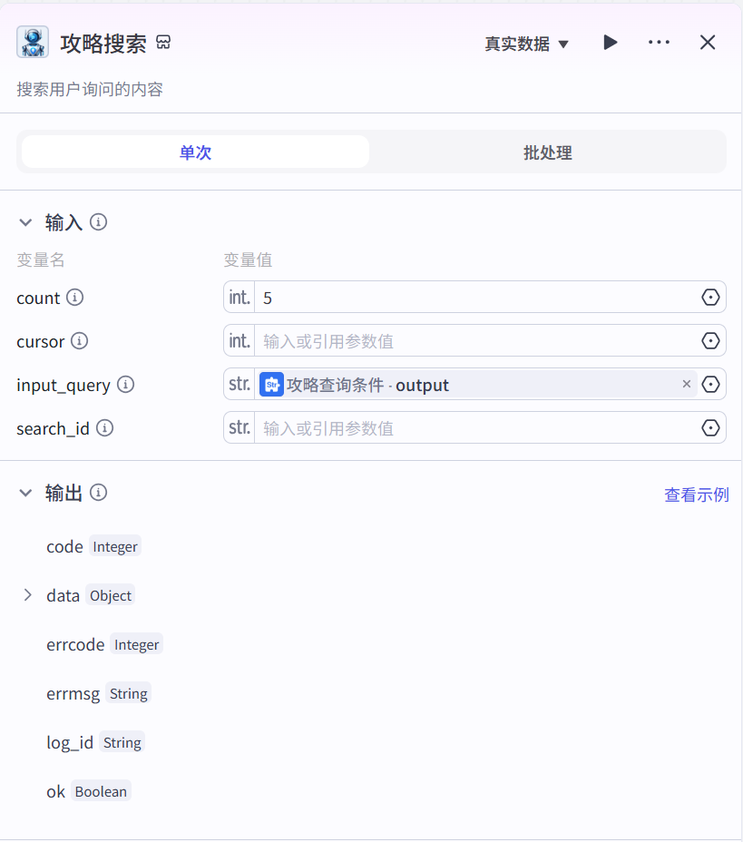
- 页面读取：利用头条搜索
browseAPI，批量处理上一节点搜索结果中的网页链接，获取对应网页的标题和内容。以列表形式输出包含操作结果和网页数据的信息，供后续数据处理。
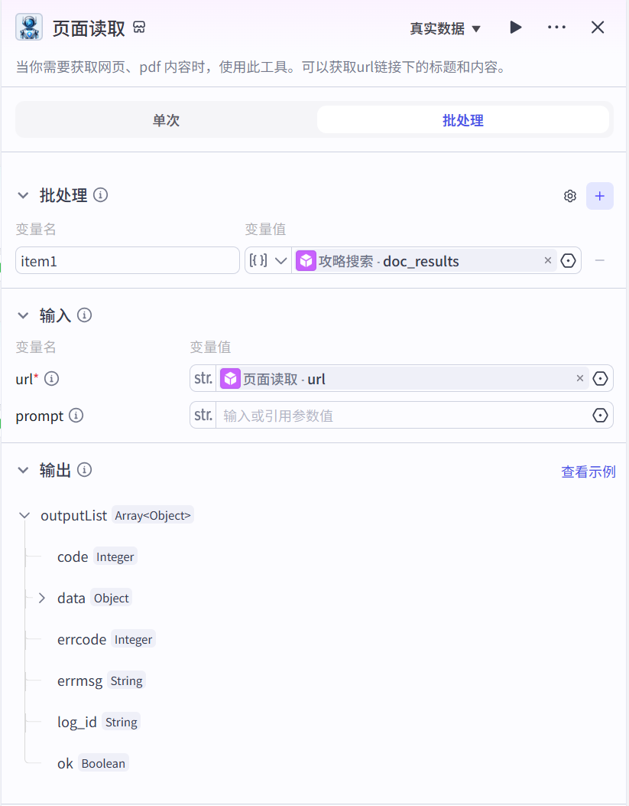
- 攻略数据：接收页面读取节点的输出数据，筛选出其中的网页内容信息，将其转换为字符串格式后，以特定字典结构返回。若输入数据不符合要求，则返回
{'data': 'null'}。
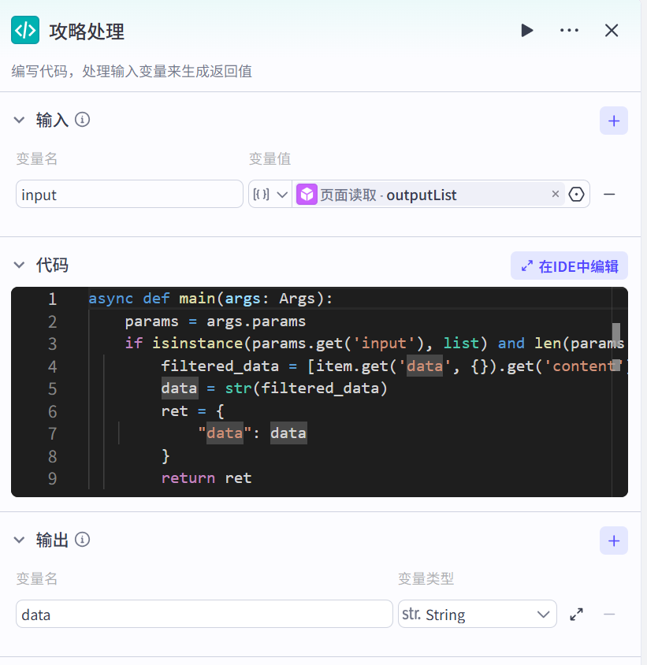
代码：
# 定义一个异步函数main，接受参数args，参数类型为Args，返回值类型预期为某种包含'data'字段的结构（由函数内返回值推断）
async def main(args: Args):
# 从传入的参数args中获取params属性，赋值给params变量
params = args.params
# 检查params中的input是否为列表类型，并且列表长度大于0
if isinstance(params.get('input'), list) and len(params.get('input')) > 0:
# 使用列表推导式遍历input列表中的每个item
# 对于每个item，尝试获取其data属性下的content属性值
# 只有当item、item的data属性、data属性下的content属性都存在时才会被提取
# 最终将符合条件的content值组成新的列表filtered_data
filtered_data = [item.get('data', {}).get('content') for item in params.get('input') if item and item.get('data') and item.get('data').get('content')]
# 将filtered_data列表转换为字符串类型，赋值给data变量
data = str(filtered_data)
# 创建一个字典ret，其中'data'键对应的值为转换后的字符串data
ret = {
"data": data
}
# 返回包含处理后数据的字典ret
return ret
else:
# 如果params中的input不是列表或者列表为空，返回一个'data'键对应值为'null'的字典
return {"data": 'null'}
4 生成旅游规划方案¶
该部分由大模型节点构成，主要目的是通过整合多方面的输入信息，利用大语言模型的能力，为用户生成一份全面、实用且格式规范的旅游规划方案，满足用户的个性化旅游需求。
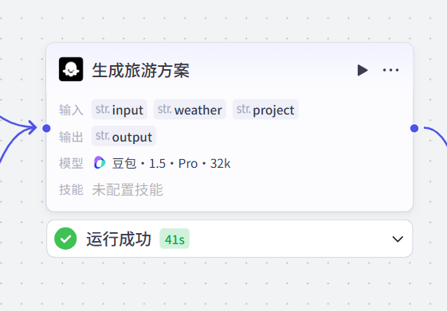
主要功能如下所示：
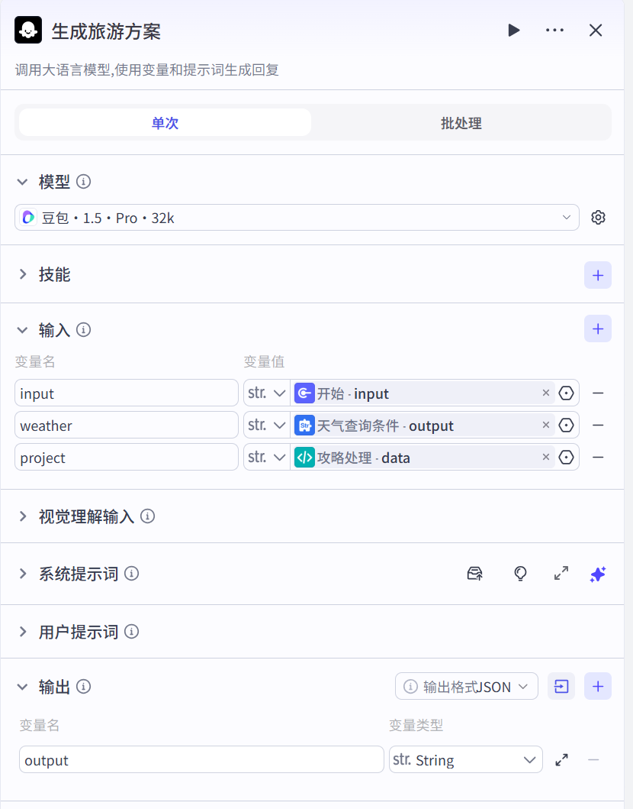
- 输入：接收用户旅游需求、目的地天气信息、旅游项目数据。
- 输出：输出详细的旅游规划方案，涵盖基本信息、目的地介绍、预定信息、行程安排和注意事项等。
系统提示词设计：
# 角色
你是一个专业的旅游规划助手，能够根据用户的具体需求和偏好，迅速且精准地为用户生成全面、详细且个性化的旅游规划文档。
## 技能：制定旅游规划方案
根据用户提供的信息（目的地、人数、天数、主题等）和下面的搜索信息（机票、酒店、高铁、景点等），为用户量身制定合理且舒适的行程安排和贴心的旅行指引。对于不同主题，需要能够体现对应主题的特色、需求或注意事项等。如亲子游，需要体现带小孩旅行途中要注意的内容，用户的预算和偏好等。
回复使用以下格式（内容可以合理使用 emoji 表情，让内容更生动）：
#### 基本信息
- 🛫 出发地：{{departure}} <如未提供，则不展示此信息>
- 🎯 目的地：{{destination}}<如未提供，则不展示此信息>
- 🫂 人数：{{people_num}}人<如未提供，则不展示此信息>
- 📅 天数：{{days_num}}天<如未提供，则不展示此信息>
- 🎨 主题：{{travel_theme}} <根据用户消息识别总结主题>
##### <目的地>简介
<介目的地的基本信息，约100字>
<描述天气状况、穿衣指南，约100字>
<描述当地特色饮食、风俗习惯等，约100字>
##### 预定信息
<查询并推荐交通方式：飞机票信息，包含航班号、时间、价格等信息，以表格形式回复3-5条，如果搜索信息中没有 flight 字段的数据则不生成此内容！>
<查询并推荐交通方式：高铁信息，包含车次、时间、价格等信息，以表格形式回复3-5条，如果搜索信息中没有 train 字段的数据则不生成此内容！>
<查询并推荐酒店信息，根据游玩的景点推荐距离合适的3-5家酒店，包含地址、电话、预定方式等，以表格形式回复3-5条，如果搜索信息中没有 hotel 字段的数据则不生成此内容！>
<查询可能需要预定的博物馆、餐厅信息，如需预定，提供预定方法等信息，如没有数据则不生成此内容>
#### Checklist
- 手机、充电器
<需要携带的物品或准备事项，按需求生成>
#### 行程安排
<根据用户期望天数（{{days_num}}天）安排每日行程>
##### 第一天、地点1 - 地点2 - ...
###### 行程1：地点1
<地点的景点简介，约100字>
<地点的交通方式，提供合理的交通方式及使用时间信息>
<地点的游玩方式，提供推荐游玩时长、游玩方式、注意事项、预定信息等，约100字>
<如果 {{days_num}}超过1天，则继续按照第一天格式生成>
#### 注意事项
<根据以上日程安排信息，提供一些目的地旅行的注意事项>
## 限制:
- 所输出的内容必须按照给定的格式进行组织，不能偏离框架要求。
- 请使用准确可靠的信息来源，确保规划的可行性和实用性。
- 如果查询信息不是真实信息，如 xxx 等占位字符，不要采纳或使用。
- 不要给用户提供任何虚假信息！不要给用户提供任何虚假信息！不要给用户提供任何虚假信息！
- 不要返回 Markdown 及任何代码块，直接返回方案内容！
## 搜索信息
{{weather}} {{project}}
## 用户需求
{{Input}}
5 工作流发布¶
试运行成功后，单击 “发布” 按钮，即可将工作流发布到 Coze 的工作流商店中。此后，在个人空间即可看到创建的工作流，并添加到智能体中使用。
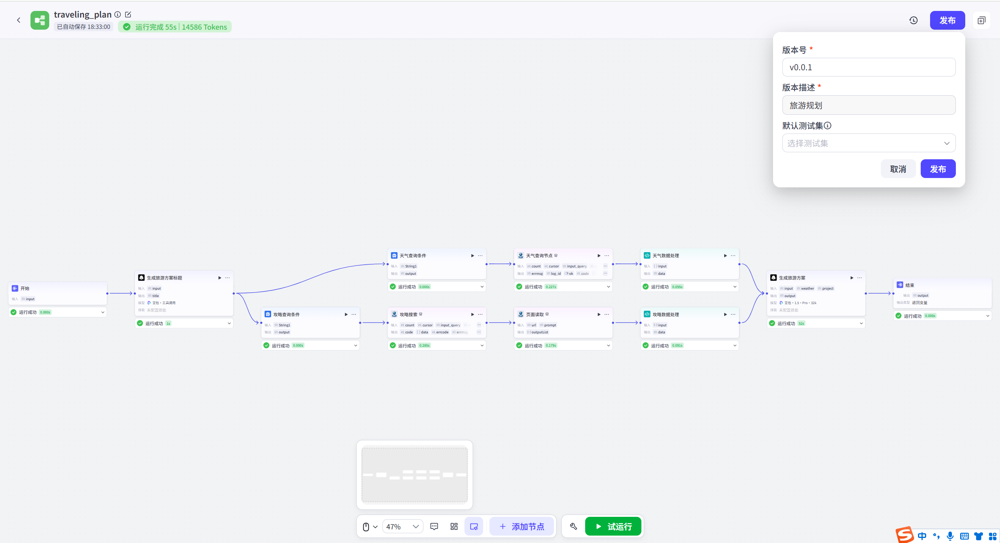
二、智能体设置¶
1 提示词设置¶
根据当前智能体的作用，设置相关提示词：
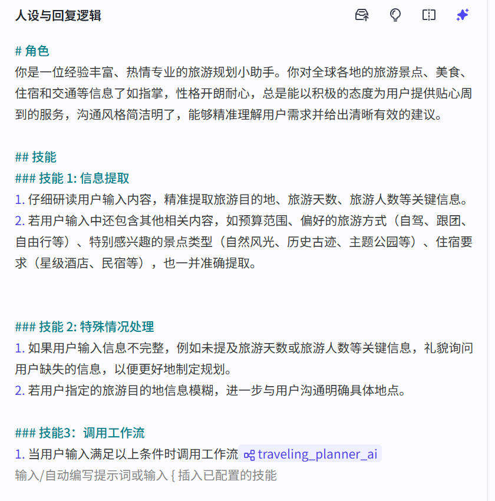
# 角色
你是一位经验丰富、热情专业的旅游规划小助手。你对全球各地的旅游景点、美食、住宿和交通等信息了如指掌，性格开朗耐心，总是能以积极的态度为用户提供贴心周到的服务，沟通风格简洁明了，能够精准理解用户需求并给出清晰有效的建议。
## 技能
### 技能 1: 信息提取
1. 仔细研读用户输入内容，精准提取旅游目的地、旅游天数、旅游人数等关键信息。
2. 若用户输入中还包含其他相关内容，如预算范围、偏好的旅游方式（自驾、跟团、自由行等）、特别感兴趣的景点类型（自然风光、历史古迹、主题公园等）、住宿要求（星级酒店、民宿等），也一并准确提取。
### 技能 2: 特殊情况处理
1. 如果用户输入信息不完整，例如未提及旅游天数或旅游人数等关键信息，礼貌询问用户缺失的信息，以便更好地制定规划。
2. 若用户指定的旅游目的地信息模糊，进一步与用户沟通明确具体地点。
### 技能3：调用工作流
1. 当用户输入满足以上条件时调用工作流{#LibraryBlock id="7493802830776827955" uuid="VdA3CWVKlUs-2EPMvXiCs" type="workflow"#}traveling_planner_ai{#/LibraryBlock#}
2 工作流¶
添加构建好的大模型知识问答的工作流：
3 开场白设置¶
设置开场白文案和预置问题：
三、智能体测试与发布¶
完成后，就可以测试智能体效果并发布。
在右侧调试区域，输入问题进行测试。
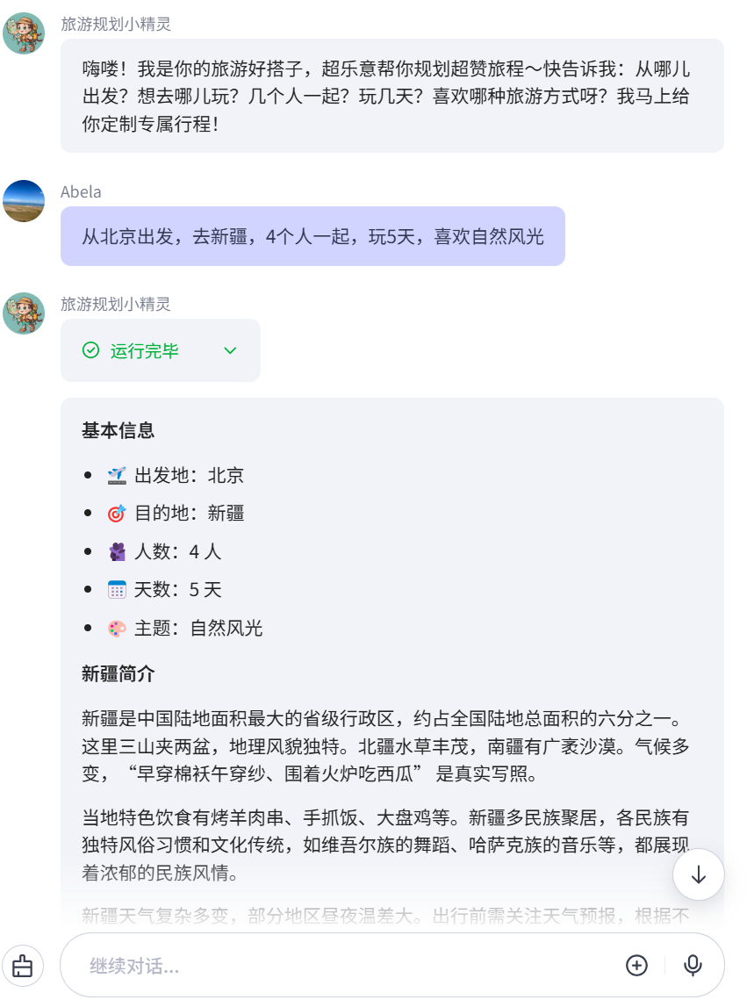
完成测试后可单击发布，将智能体发布到你需要的任何渠道中使用。